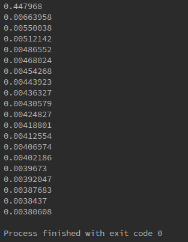

例子3 建造神经网络
作者: 赵孔亚 编辑: 莫烦
学习资料:
这次提到了怎样建造一个完整的神经网络,包括添加神经层,计算误差,训练步骤,判断是否在学习.
本次课程，我们会在上节课的基础上，继续讲解如何构建神经层。
add_layer 功能
首先，我们导入本次所需的模块。
import tensorflow as tf
import numpy as np
构造添加一个神经层的函数。（在上次课程中有详细介绍）
def add_layer(inputs, in_size, out_size, activation_function=None):
Weights = tf.Variable(tf.random_normal([in_size, out_size]))
biases = tf.Variable(tf.zeros([1, out_size]) + 0.1)
Wx_plus_b = tf.matmul(inputs, Weights) + biases
if activation_function is None:
outputs = Wx_plus_b
else:
outputs = activation_function(Wx_plus_b)
return outputs
导入数据
构建所需的数据。
这里的x_data和y_data并不是严格的一元二次函数的关系，因为我们多加了一个noise,这样看起来会更像真实情况。
x_data = np.linspace(-1,1,300, dtype=np.float32)[:, np.newaxis]
noise = np.random.normal(0, 0.05, x_data.shape).astype(np.float32)
y_data = np.square(x_data) - 0.5 + noise
利用占位符定义我们所需的神经网络的输入。
tf.placeholder()就是代表占位符，这里的None代表无论输入有多少都可以，因为输入只有一个特征，所以这里是1。
xs = tf.placeholder(tf.float32, [None, 1])
ys = tf.placeholder(tf.float32, [None, 1])
接下来，我们就可以开始定义神经层了。 通常神经层都包括输入层、隐藏层和输出层。这里的输入层只有一个属性， 所以我们就只有一个输入；隐藏层我们可以自己假设，这里我们假设隐藏层有10个神经元； 输出层和输入层的结构是一样的，所以我们的输出层也是只有一层。 所以，我们构建的是——输入层1个、隐藏层10个、输出层1个的神经网络。
搭建网络
下面，我们开始定义隐藏层,利用之前的add_layer()函数，这里使用 Tensorflow 自带的激励函数tf.nn.relu。
l1 = add_layer(xs, 1, 10, activation_function=tf.nn.relu)
接着，定义输出层。此时的输入就是隐藏层的输出——l1，输入有10层（隐藏层的输出层），输出有1层。
prediction = add_layer(l1, 10, 1, activation_function=None)
计算预测值prediction和真实值的误差，对二者差的平方求和再取平均。
loss = tf.reduce_mean(tf.reduce_sum(tf.square(ys - prediction),
reduction_indices=[1]))
接下来，是很关键的一步，如何让机器学习提升它的准确率。tf.train.GradientDescentOptimizer()中的值通常都小于1，这里取的是0.1，代表以0.1的效率来最小化误差loss。
train_step = tf.train.GradientDescentOptimizer(0.1).minimize(loss)
使用变量时，都要对它进行初始化，这是必不可少的。
# init = tf.initialize_all_variables() # tf 马上就要废弃这种写法
init = tf.global_variables_initializer() # 替换成这样就好
定义Session，并用 Session 来执行 init 初始化步骤。
（注意：在tensorflow中，只有session.run()才会执行我们定义的运算。）
sess = tf.Session()
sess.run(init)
训练
下面，让机器开始学习。
比如这里，我们让机器学习1000次。机器学习的内容是train_step, 用 Session 来 run 每一次 training 的数据，逐步提升神经网络的预测准确性。
(注意：当运算要用到placeholder时，就需要feed_dict这个字典来指定输入。)
for i in range(1000):
# training
sess.run(train_step, feed_dict={xs: x_data, ys: y_data})
每50步我们输出一下机器学习的误差。
if i % 50 == 0:
# to see the step improvement
print(sess.run(loss, feed_dict={xs: x_data, ys: y_data}))
在电脑上运行本次代码的结果为：

通过上图可以看出，误差在逐渐减小，这说明机器学习是有积极的效果的。
如果你觉得这篇文章或视频对你的学习很有帮助, 请你也分享它, 让它能再次帮助到更多的需要学习的人. 莫烦没有正式的经济来源, 如果你也想支持 莫烦Python 并看到更好的教学内容, 赞助他一点点, 作为鼓励他继续开源的动力.